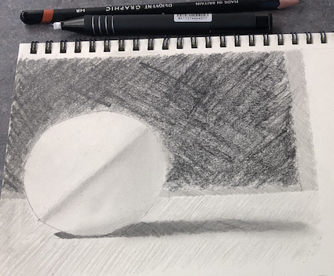

// This program greets Owl.
#include <iostream>
using namespace std;
int main()
{
cout << "Hello, Owl!\n";
return 0;
}
Les oiseaux dans la charmille
Dans les cieux l'astre du jour
Tout parle à la jeune fille
Tout parle à la jeune fille d'amour
Tout parle à la jeune fille d'amour
Click here for more information
Click here for One Rendition of Act 1
Click here for a Second Rendition of Act 1
Click here for a Third Rendition of Act 1
Synopsis for this Opéra Fantastique called Les Contes d'Hoffmann
Les Oiseaux dans La Charmille is found in Act 1 (Olympia)
Film Fantastique
Click here for more information